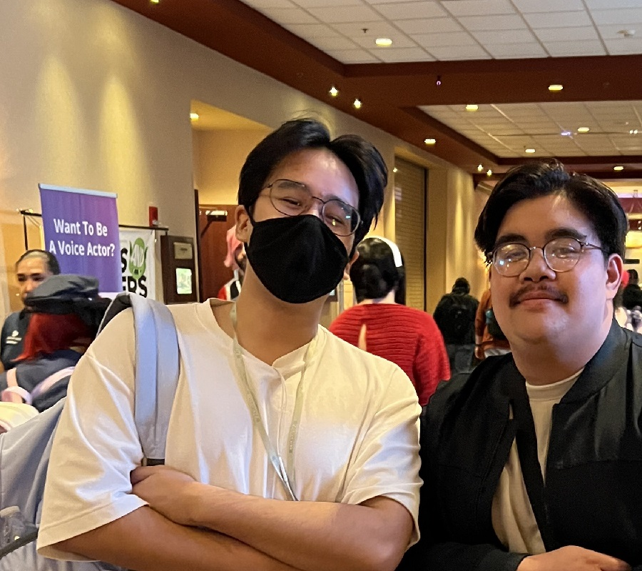

A picture of me at Ichibancon 2024 meeting a TikToker I follow!
Personal Background: I was born and raised in Charlotte, North Carolina.
Professional Background: I was a TA for ITSC 1213 Intro to Computer Science II last semester, and currently the lead TA for ITSC 2214 Data Structures and Algorithms,
also conducting undergradute research trying to bring cancer and radiation treatment planning systems to the web.
Academic Background: Senior in credits, but I spent 7 years at CPCC so I have been a student for about 8 years. I joined UNCC last year, January 2024.
Background in this Subject: Won hackathons with minimal knowledge in HTML and CSS!
Primary Computer Platform: Windows 10 Desktop built and upgraded over many years - Ryzen 5 5600x, MSI Tomahawk B550, RTX 5070, 32 GB RAM, 2 TB m.2 SSD, 2 TB Seagate HDD.
Courses:
ITIS 3135 - Web-Based Application Design and Development: I want more HTML, CSS, and JS practice!
ITSC 3990 - Undergraduate Research: It sounds really fun, and perhaps my research can make a difference.
ITCS 4114 - Real World Algorithms: 2214 was too easy and I want to learn more about data structures and algorithms.
ITSC 2181 - Introduction to Computer Systems: Required class but I am genuinely interested.
ITCS 3155 - Software Engineering: Required class, but also great practice.
Funny/Interesting thing about myself: Top 125 solo queue support on Overwatch, Grandmaster on TFT. Played a tiny bit of Marvels and hit Celestial I, I like Mantis, Black Panther, and Winter Soldier.